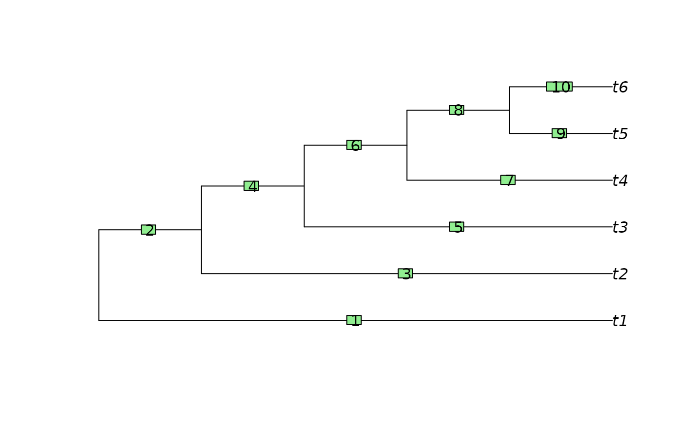

Quickly identify edges that are 'ancestral' to a particular edge in a tree.
EdgeAncestry(edge, parent, child, stopAt = (parent == min(parent)))
| edge | Integer specifying the number of the edge whose child edges should be returned. |
|---|---|
| parent | Integer vector corresponding to the first column of the edge
matrix of a tree of class |
| child | Integer vector corresponding to the second column of the edge
matrix of a tree of class |
| stopAt | Integer or logical vector specifying the edge(s) at which to terminate the search; defaults to the edges with the smallest parent, which will be the root edges if nodes are numbered Cladewise or in Preorder. |
EdgeAncestry() returns a logical vector stating whether each edge in
turn is a descendant of the specified edge.
Other tree navigation:
AncestorEdge(),
CladeSizes(),
DescendantEdges(),
EdgeDistances(),
ListAncestors(),
MRCA(),
NDescendants(),
NodeDepth(),
NodeOrder(),
NonDuplicateRoot(),
RootNode()
parent <- tree$edge[, 1] child <- tree$edge[, 2] EdgeAncestry(7, parent, child)#> [1] FALSE TRUE FALSE TRUE FALSE TRUE FALSE FALSE FALSE FALSE#> [1] 4 6